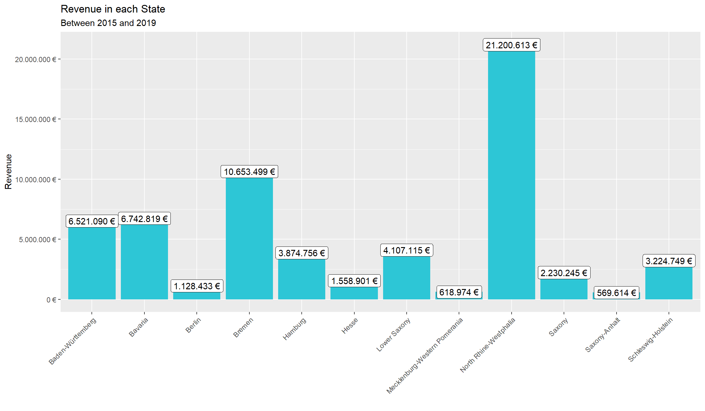
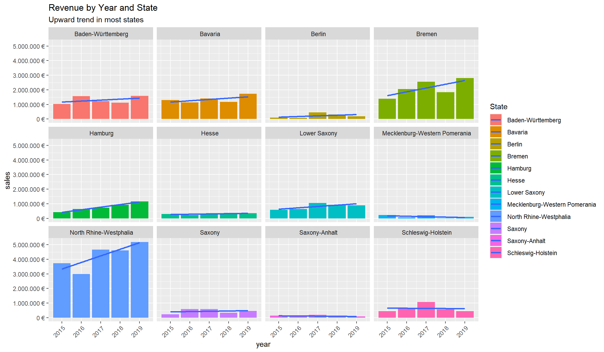
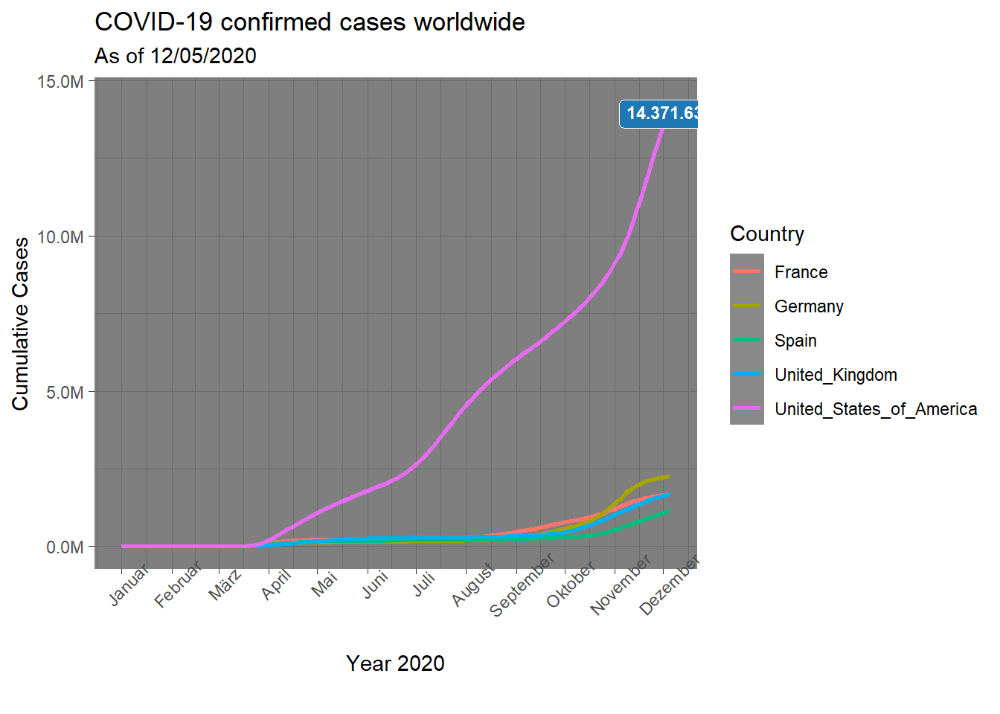
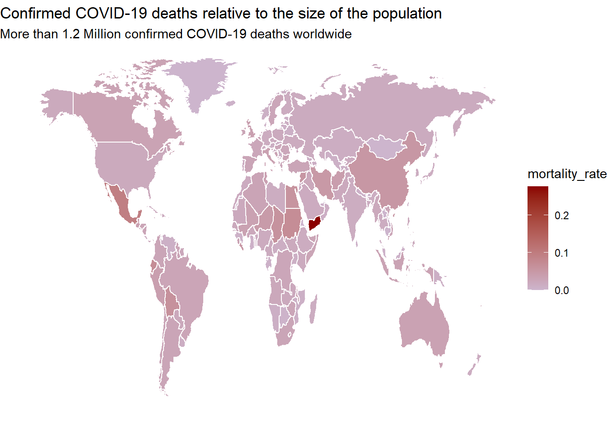

# Load libraries ----
library(tidyverse)
library(readxl)
library(lubridate)
# Importing Files ----
bikes_tbl <- read_excel("DS_101/00_data/01_bike_sales/01_raw_data/bikes.xlsx")
orderlines_tbl <- read_excel("DS_101/00_data/01_bike_sales/01_raw_data/orderlines.xlsx")
bikeshops_tbl <- read_excel("DS_101/00_data/01_bike_sales/01_raw_data/bikeshops.xlsx")
# Joining Data
left_join(orderlines_tbl, bikes_tbl, by = c("product.id" = "bike.id"))## # A tibble: 15,644 x 15
## ...1 order.id order.line order.date customer.id product.id quantity
## <chr> <dbl> <dbl> <dttm> <dbl> <dbl> <dbl>
## 1 1 1 1 2015-01-07 00:00:00 2 2681 1
## 2 2 1 2 2015-01-07 00:00:00 2 2411 1
## 3 3 2 1 2015-01-10 00:00:00 10 2629 1
## 4 4 2 2 2015-01-10 00:00:00 10 2137 1
## 5 5 3 1 2015-01-10 00:00:00 6 2367 1
## 6 6 3 2 2015-01-10 00:00:00 6 1973 1
## 7 7 3 3 2015-01-10 00:00:00 6 2422 1
## 8 8 3 4 2015-01-10 00:00:00 6 2655 1
## 9 9 3 5 2015-01-10 00:00:00 6 2247 1
## 10 10 4 1 2015-01-11 00:00:00 22 2408 1
## # ... with 15,634 more rows, and 8 more variables: model <chr>,
## # model.year <dbl>, frame.material <chr>, weight <dbl>, price <dbl>,
## # category <chr>, gender <chr>, url <chr>bike_orderlines_joined_tbl <- orderlines_tbl %>%
left_join(bikes_tbl, by = c("product.id" = "bike.id")) %>%
left_join(bikeshops_tbl, by = c("customer.id" = "bikeshop.id"))
# Wrangling Data ----
bike_orderlines_wrangled_tbl <- bike_orderlines_joined_tbl %>%
# separate location column into city and state columns
separate(col = location,
into = c("city", "state"),
sep = ",") %>%
# Add the total price (price * quantity)
mutate(total.price = price * quantity) %>%
# Remove unnecessary columns
select(order.date, city, state, total.price) %>%
# 5.4 Rename columns
set_names(names(.) %>% str_replace_all("\\.", "_"))
# Sales in each state ----
# Manipulate
sales_by_state_tbl <- bike_orderlines_wrangled_tbl %>%
# Select the columns we need
select(state, total_price ) %>%
# Group the data by state
group_by(state) %>%
# and summarize the sales
summarize(sales = sum(total_price)) %>%
# add currency format
# mutate(sales_text = scales::dollar(sales)) <- Works for dollar values
mutate(sales_text = scales::dollar(sales, big.mark = ".",
decimal.mark = ",",
prefix = "",
suffix = " €"))
# Visualize
sales_by_state_tbl %>%
ggplot(aes(x = state, y = sales))+
# Use geom_col for a bar plot
geom_col(fill = "#2DC6D6") +
# Adding labels to the bars
geom_label(aes(label = sales_text)) +
# Rotate x-axis labels
theme(axis.text.x = element_text(angle = 45, hjust = 1)) +
scale_y_continuous(labels = scales::dollar_format(big.mark = ".",
decimal.mark = ",",
prefix = "",
suffix = " €")) +
labs(
title = "Revenue in each State",
subtitle = "Between 2015 and 2019",
x = "", # Override defaults for x and y
y = "Revenue"
)
# Sales by Year and State ----
# Manipulate
sales_by_year_and_state_tbl <- bike_orderlines_wrangled_tbl %>%
# Select columns and extract year out of date
select(order_date, total_price, state) %>%
mutate(year = year(order_date)) %>%
# Group by year & state and calculate revenue
group_by(year, state) %>%
summarise(sales = sum(total_price)) %>%
ungroup() %>%
# add currency format
mutate(sales_text = scales::dollar(sales, big.mark = ".",
decimal.mark = ",",
prefix = "",
suffix = " €"))
# Step 2 - Visualize
sales_by_year_and_state_tbl %>%
# Set up x, y, fill
ggplot(aes(x = year, y = sales, fill = state)) +
# Rotate x-axis labels
theme(axis.text.x = element_text(angle = 45, hjust = 1)) +
# Geometries
geom_col() + # Run up to here to get a stacked bar plot
# Add a trendline
geom_smooth(method = "lm", se = FALSE) + # Adding a tren
# Facet
facet_wrap(~ state) +
# Formatting
scale_y_continuous(labels = scales::dollar_format(big.mark = ".",
decimal.mark = ",",
prefix = "",
suffix = " €")) +
labs(
title = "Revenue by Year and State",
subtitle = "Upward trend in most states",
fill = "State" # Changes the legend name
)
I chose the cat facts API for this, because I think cats are cool.
# add libraries
library(tidyverse)
library(httr)
library(jsonlite)
# finds the most popular cat facts
resp <- GET("https://cat-fact.herokuapp.com/facts")
cat_facts <- resp %>%
.$content %>%
rawToChar() %>%
fromJSON()
cat_facts_tbl <-cat_facts[["all"]] %>%
as_tibble()
cat_facts_tbl %>% head(n=10)## # A tibble: 10 x 6
## `_id` text type user$`_id` $name$first $$last upvotes userUpvoted
## <chr> <chr> <chr> <chr> <chr> <chr> <int> <lgl>
## 1 58e00a~ Cats and hu~ cat 58e007480a~ Kasimir Schulz 14 NA
## 2 5b0c5e~ People who ~ cat 5a9ac18c74~ Alex Wohlb~ 8 NA
## 3 58e00a~ Female cats~ cat 58e007480a~ Kasimir Schulz 8 NA
## 4 5b1b40~ Scottish sa~ cat 5a9ac18c74~ Alex Wohlb~ 7 NA
## 5 599f89~ Here is a v~ cat 5a9ac18c74~ Alex Wohlb~ 7 NA
## 6 58e00b~ Original ki~ cat 58e007480a~ Kasimir Schulz 6 NA
## 7 5b01a4~ The special~ cat 5a9ac18c74~ Alex Wohlb~ 6 NA
## 8 58e00a~ A cat's bra~ cat 58e007480a~ Kasimir Schulz 6 NA
## 9 58e00a~ A cat's cer~ cat 58e007480a~ Kasimir Schulz 5 NA
## 10 58e00b~ A cat has f~ cat 58e007480a~ Kasimir Schulz 5 NAFor this challenge I scraped the prices and model names for all the bikes in the ‘gravel’ category of the bike company Rose. Admittedly, this code is not great but I was short on time and couldn’t afford to take the time to figure out how to make it more neat. My apologies…
# WEBSCRAPING ----
# Get the prices and model names for at least one category
# LIBRARIES ----
library(tidyverse) # Main Package - Loads dplyr, purrr, etc.
library(rvest) # HTML Hacking & Web Scraping
library(xopen) # Quickly opening URLs
library(jsonlite) # converts JSON files to R objects
library(glue) # concatenate strings
library(stringi) # character string/text processing
# get the url for each bike in the product category "gravel"
gravel_groups_url_tbl <- read_html("https://www.rosebikes.de/fahrräder/gravel") %>%
html_nodes(css = ".catalog-category-bikes__button") %>%
html_attr("href") %>%
enframe(name = "position", value = "subdirectory") %>%
mutate(url = glue("https://www.rosebikes.de{subdirectory}")
)
prices_tbl_1 <- read_html(gravel_groups_url_tbl$url[1]) %>%
html_nodes(css = (".catalog-category-model__price-current-value")) %>%
html_text() %>%
as_tibble()
model_names_tbl_1 <- read_html(gravel_groups_url_tbl$url[1]) %>%
html_nodes(css = (".catalog-category-model__title")) %>%
html_text() %>%
as_tibble()
prices_tbl_2 <- read_html(gravel_groups_url_tbl$url[2]) %>%
html_nodes(css = (".catalog-category-model__price-current-value")) %>%
html_text() %>%
as_tibble()
model_names_tbl_2 <- read_html(gravel_groups_url_tbl$url[2]) %>%
html_nodes(css = (".catalog-category-model__title")) %>%
html_text() %>%
as_tibble()
prices_tbl_3 <- read_html(gravel_groups_url_tbl$url[3]) %>%
html_nodes(css = (".catalog-category-model__price-current-value")) %>%
html_text() %>%
as_tibble()
model_names_tbl_3 <- read_html(gravel_groups_url_tbl$url[3]) %>%
html_nodes(css = (".catalog-category-model__title")) %>%
html_text() %>%
as_tibble()
prices_tbl <- prices_tbl_1 %>%
full_join(prices_tbl_2) %>%
full_join(prices_tbl_3)
model_names_tbl <- model_names_tbl_1 %>%
full_join(model_names_tbl_2) %>%
full_join(model_names_tbl_3)
bikes_tbl <- bind_cols(model_names_tbl,prices_tbl) %>%
rename(model = value...1, price = value...2)
head(bikes_tbl, n=10)## # A tibble: 10 x 2
## model price
## <chr> <chr>
## 1 "\nBACKROAD AL GRX RX400\n" "\n1.549,00 €\n"
## 2 "\nBACKROAD AL Apex 1x11\n" "\n1.599,00 €\n"
## 3 "\nBACKROAD AL GRX RX600 1x11\n" "\n1.799,00 €\n"
## 4 "\nBACKROAD AL GRX RX600\n" "\n1.849,00 €\n"
## 5 "\nBACKROAD AL Apex 1x11 MULLET\n" "\n1.899,00 €\n"
## 6 "\nBACKROAD AL GRX RX810 1x11\n" "\n1.999,00 €\n"
## 7 "\nBACKROAD AL GRX RX810\n" "\n2.049,00 €\n"
## 8 "\nBACKROAD GRX RX600 1x11\n" "\n2.599,00 €\n"
## 9 "\nBACKROAD GRX RX600\n" "\n2.699,00 €\n"
## 10 "\nBACKROAD GRX RX810 1x11\n" "\n2.899,00 €\n"For this challenge I had to set eval = FALSE as it would produce an error otherwise. Running the code as a script without building the website works fine and the requested outputs are produced.
# libraries ----
library(tidyverse)
library(vroom)
library(data.table)
library(lubridate)
# select columns and define type ----
assignee_col_types <- list(
id = col_character(), # connects 'patent_assignee' and 'assignee'
type = col_double(), # Q1 & Q2: only type 2(US-Comp), Q3: type 2 and type 3(Foreign Comp)
name_first = col_skip(),
name_last = col_skip(),
organization = col_character() # name of comp
)
patent_col_types <- list(
id = col_character(), # connects 'patent_assignee' and 'patent' and 'uspc'
type = col_skip(),
number = col_skip(),
country = col_skip(),
date = col_date("%Y-%m-%d"), # in year 2019
abstract = col_skip(),
title = col_skip(),
kind = col_skip(),
num_claims = col_skip(),
filename = col_skip(),
withdrawn = col_skip()
)
patent_assignee_col_types <- list(
patent_id = col_character(), # connects 'patent_assignee' and 'patent'
assignee_id = col_character(), # connects 'patent_assignee' and 'assignee'
location_id = col_skip()
)
uspc_col_types <- list(
uuid = col_skip(),
patent_id = col_character(), # connects 'patent_assignee' and 'uspc'
mainclass_id = col_character(), # to select USPTO tech main class
subclass_id = col_skip(),
sequence = col_skip()
)
# import data ----
patent_tbl <- vroom(
file = "./DS_101/00_data/patent/patent.tsv",
delim = "\t",
col_types = patent_col_types,
na = c("", "NA", "NULL")
)
uspc_tbl <- vroom(
file = "./DS_101/00_data/uspc/uspc.tsv",
delim = "\t",
col_types = uspc_col_types,
na = c("", "NA", "NULL")
)
patent_assignee_tbl <- vroom(
file = "./DS_101/00_data/patent_assignee/patent_assignee.tsv",
delim = "\t",
col_types = patent_assignee_col_types,
na = c("", "NA", "NULL")
)
assignee_tbl <- vroom(
file = "./DS_101/00_data/assignee/assignee.tsv",
delim = "\t",
col_types = assignee_col_types,
na = c("", "NA", "NULL")
)
patent_tbl <- patent_tbl %>%
setDT()
patent_assignee_tbl <- patent_assignee_tbl %>%
setDT()
assignee_tbl <- assignee_tbl %>%
setDT()
uspc_tbl <- uspc_tbl %>%
setDT()
# rename columns
setnames(patent_tbl, "id", "patent_id")
setnames(assignee_tbl, "id", "assignee_id")
### Patent Dominance
### What US company / corporation has the most patents?
### List the 10 US companies with the most assigned/granted patents.
# combine assignee_tbl with patent_assignee_tbl,
combined_data_1 <- merge(x = assignee_tbl, y = patent_assignee_tbl,
by = "assignee_id",
all.x = TRUE,
all.y = FALSE)
setkey(combined_data_1, "assignee_id")
setorderv(combined_data_1, c("assignee_id", "type", "organization", "patent_id"))
# filter by type to get US companies only, group by organization
filtered_data_1 <- combined_data_1[type == 2, .(numberOfPatents = .N), by = organization]%>%
filter(!is.na(organization))
# reorder in descending number of entries and plot top 10
filtered_data_1[order(-numberOfPatents)] %>%
head(n=10)
### Recent patent activity:
### What US company had the most patents granted in 2019?
### List the top 10 companies with the most new granted patents for 2019.
combined_data_2 <- merge(x = combined_data_1, y = patent_tbl,
by = "patent_id",
all.x = TRUE,
all.y = TRUE)
# add year column
combined_data_2[, year := year(date)]
# filter for patents granted in 2019, group by organization
filtered_data_2 <- combined_data_2[year == "2019", .(numOfGrantedPatents = .N), by = organization] %>%
filter(!is.na(organization), !is.na(patent_id), type == 2)
filtered_data_2[order(-numOfGrantedPatents)] %>%
head(n=10)
### Innovation in Tech:
### What is the most innovative tech sector?
### For the top 10 companies (worldwide) with the most patents, what are the top 5 USPTO tech main classes?
combined_data_3 <- merge(x = combined_data_2, y = uspc_tbl,
by = "patent_id",
all.x = TRUE,
all.y = FALSE) %>%
filter(!is.na(mainclass_id), type == 2 | type ==3)
grouped_data_3 <- combined_data_3[, .(numOfPatents = .N), by = organization]
top_worldwide <- grouped_data_3[order(-numOfPatents)]
top_10_worldwide <- top_worldwide[1:10]
final_table <- merge(x = combined_data_3, y = top_10_worldwide,
by = "organization",
all.x = FALSE,
all.y = TRUE)
grouped_final_table = final_table[!is.na(organization), .(mainclass_count = .N), by = mainclass_id]
grouped_final_table[order(-mainclass_count)] %>%
head(n=5)library(tidyverse)
library(lubridate)
library(scales)
# Data Manipulation
covid_data_tbl <- read_csv("https://opendata.ecdc.europa.eu/covid19/casedistribution/csv")
covid_data_manipulated <- covid_data_tbl %>%
select(dateRep, cases, countriesAndTerritories) %>%
rename(countries = countriesAndTerritories) %>%
filter(countries == "Germany" | countries == "Spain" | countries == "France" |
countries == "United_Kingdom" | countries == "United_States_of_America") %>%
pivot_wider(names_from = countries,
values_from = cases) %>%
set_names("date", "GermanyNew", "SpainNew" , "FranceNew",
"United_KingdomNew", "United_States_of_AmericaNew") %>%
mutate(date = dmy(date)) %>%
arrange(date) %>%
mutate(Germany = cumsum(GermanyNew), Spain = cumsum(SpainNew),
France = cumsum(FranceNew), United_Kingdom = cumsum(United_KingdomNew),
United_States_of_America = cumsum(United_States_of_AmericaNew)) %>%
select(date, Germany, Spain, France, United_Kingdom, United_States_of_America) %>%
pivot_longer(cols = c(2:6), names_to = "country", values_to = "cumulative_cases") %>%
mutate(Month = month(date))
colMax <- function(data) sapply(data, max, na.rm = TRUE)
max_data <-colMax(covid_data_manipulated)
# Data Visualization
min <- as.Date("2020-1-1")
max <- NA
covid_data_manipulated %>%
ggplot((aes(x = date, y = cumulative_cases, color = country))) +
geom_line(size = 1)+
geom_smooth(method = "loess", span = 0.1)+
geom_label(label = "14.371.633",
vjust = 1,
size = 3,
fill = "#1f78b4",
color = "white",
fontface = "bold",
data = covid_data_manipulated %>%
filter(date == "2020-12-05" & country == "United_States_of_America")
) +
theme_dark()+
scale_x_date(breaks = date_breaks("months"),
labels = date_format("%B"),limits = c(min, max))+
theme(axis.text.x = element_text(angle=45))+
scale_y_continuous(labels = label_number(accuracy = NULL, scale = 1e-6,
prefix = "", suffix = "M",
big.mark = "", decimal.mark = "."))+
labs(
title = "COVID-19 confirmed cases worldwide",
subtitle = "As of 12/05/2020",
caption = "",
x = "Year 2020",
y = "Cumulative Cases",
color = "Country" # Legend text
)
library(tidyverse)
library(lubridate)
library(scales)
library(maps)
require(graphics)
# Data Manipulation
covid_data_tbl <- read_csv("https://opendata.ecdc.europa.eu/covid19/casedistribution/csv") %>%
as_tibble()
# calculate mortality rate for each country
covid_data_manipulated <- covid_data_tbl %>%
select(cases, deaths, countriesAndTerritories ) %>%
group_by(countriesAndTerritories) %>%
summarise(total_deaths = sum(deaths),total_cases = sum(cases)) %>%
ungroup() %>%
mutate(mortality_rate = total_deaths/total_cases) %>%
mutate(across(countriesAndTerritories, str_replace_all, "_", " ")) %>%
rename(region = countriesAndTerritories) %>%
mutate(region = case_when(
region == "United Kingdom" ~ "UK",
region == "United States of America" ~ "USA",
region == "Czechia" ~ "Czech Republic",
TRUE ~ region
))
# Data Visualization
world <- map_data("world")
mortality_map <- left_join(covid_data_manipulated, world, by = "region")
ggplot(mortality_map, aes(map_id = region, fill = mortality_rate))+
geom_map(map = mortality_map, color = "white")+
expand_limits(x = mortality_map$long, y = mortality_map$lat)+
theme_void()+
scale_fill_continuous(low="thistle3", high="darkred",
guide="colorbar",na.value="grey")+
# remove axis labels
theme(axis.title.x=element_blank(),
axis.text.x=element_blank(),
axis.ticks.x=element_blank(),
axis.title.y=element_blank(),
axis.text.y=element_blank(),
axis.ticks.y=element_blank())+
labs(
title = "Confirmed COVID-19 deaths relative to the size of the population",
subtitle = "More than 1.2 Million confirmed COVID-19 deaths worldwide",
caption = "",
x = "",
y = "",
color = "Mortality Rate" # Legend text
)